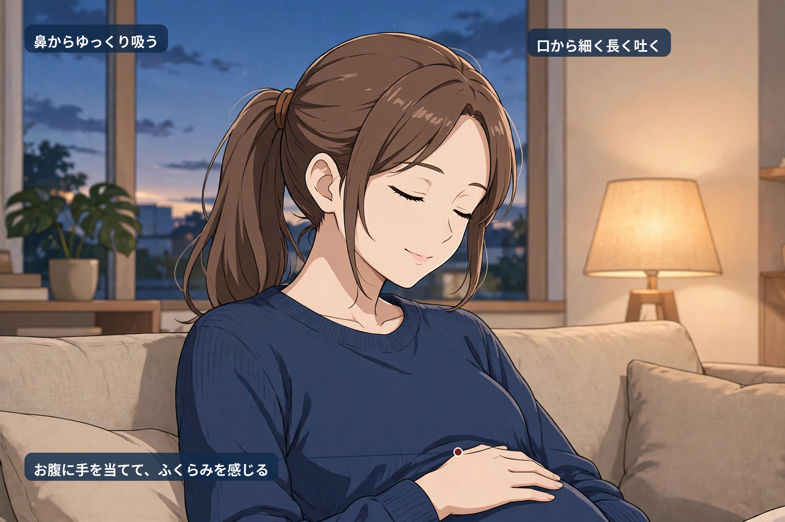

AUTONOMIC NERVES
自律神経と体のリズム
オンとオフの切り替えがうまくいかない感覚の背景には、自律神経のリズムと呼吸が関わっています。交感神経と副交感神経の働きを、移動と仕事の多い暮らしに引き寄せて解説します。
自律神経とは｜意思とは別に働く調整の仕組み
自律神経は、心臓の拍動、血圧、体温、消化、呼吸のリズムなど、体の基本的な働きを無意識のうちに調整している神経の仕組みです。手を動かそうと思って動かす運動の神経とは違い、眠っている間も含めて24時間働き続けています。自律神経には、活動するときに働く交感神経と、休むときに働く副交感神経があり、この二つがシーソーのようにバランスを取りながら、体の状態を場面に合わせて切り替えています。朝起きて活動を始める、食事の後に消化が進む、夜に体が休息へ向かう。こうした一日の流れは、自律神経のリズムに支えられています。このリズムは、生活習慣や環境の変化の影響を受けやすい繊細な仕組みでもあります。まずは、オンとオフの切り替えを担う仕組みがあることを知ることが、体の感覚を理解する手がかりになります。自律神経の働きは、体温の調整にも関わっています。暑いときには汗をかいて熱を逃がし、寒いときには血管を収縮させて熱を守る。この調整も無意識に行われています。冷房の効いたオフィスや新幹線の車内と、暑い屋外を行き来する夏の暮らしは、体温調整の切り替えが頻繁に求められる環境です。だるさを感じやすい背景には、こうした調整の負担も含まれます。体の仕組みは互いにつながっており、自律神経はその調整役として、呼吸、体温、消化、睡眠といった多くの働きを同時に支えています。
交感神経と副交感神経｜アクセルとブレーキのたとえ
交感神経はよくアクセルに、副交感神経はブレーキにたとえられます。仕事に集中するとき、運動をするとき、緊張する場面では交感神経が優位になり、心拍が上がり、筋肉は働く準備を整えます。一方、食事の後や入浴中、休息の時間には副交感神経が優位になり、消化が進み、体は回復へ向かいます。どちらが良い・悪いではなく、場面に応じて切り替わることが大切です。問題になりやすいのは、アクセルを踏んだままの状態が長く続くことです。締め切りに追われる日々、移動と会議が詰まった出張、夜遅くまでの画面作業が続くと、体は活動モードのまま過ごす時間が長くなります。図1のとおり、一日の中で二つの神経は波のように入れ替わります。その波がなだらかに切り替わる暮らしが、リズムの整った状態といえます。アクセルとブレーキのたとえで大切なのは、ブレーキが弱い状態だけでなく、アクセルとブレーキを同時に踏むような状態もあるという点です。体は疲れているのに気持ちだけが高ぶっている、休みたいのに考えごとが止まらない。こうした状態は、切り替えがうまくいっていないサインの一つとして捉えられます。反対に、朝にすっと活動モードへ入れる、夜に自然と気持ちが静まる、という切り替えの滑らかさが、リズムの整った状態の目安です。自分の切り替えのパターンを知ることが、無理のない予定の組み方にも役立ちます。

切り替えが滞ると感じること｜日常のサインの読み方
自律神経のリズムの乱れは、診断名ではなく日常の感覚として現れることが多くあります。たとえば、休んだはずなのにすっきりしない、夜に体は疲れているのに気持ちが静まらない、朝の目覚めが重い、肩や首の張りが抜けにくい、食欲のリズムが一定しない、といった感覚です。これらは一つの原因で説明できるものではなく、睡眠、活動量、光を浴びる時間、食事の時間帯など、複数の要素が重なって生まれます。新大阪のように人の流れが速い街では、出張の早朝移動や、夜遅い帰宅が続く時期に、こうした感覚を覚える方もいます。ただし、強い不調が続く場合や、日常生活に支障がある場合は、自律神経の問題と決めつけず、医療機関へ相談することが大切です。ここでの解説は、体の仕組みを知り、暮らしを見直すための情報としてお読みください。サインの読み方として、記録をつける方法も役立ちます。目覚めの感覚、昼間の集中のしやすさ、夜の寝つきなどを簡単な記号で残すだけでも、数週間後には自分の波が見えてきます。出張が続いた週と、通常の週で波がどう違うか、休日の過ごし方で翌週の調子がどう変わるか。こうした傾向が分かると、対策は具体的になります。ただし、記録は自分を追い込むためのものではありません。傾向を知って暮らしを調整するための道具として、気楽に続けることが大切です。気になる変化があれば、専門家への相談材料にもなります。
呼吸との関係｜ゆっくり吐くことが切り替えの合図になる理由
自律神経は基本的に無意識で働きますが、呼吸はその中で、意識してリズムを変えられる数少ない入口です。息を吸うときは交感神経が、吐くときは副交感神経がやや優位になるといわれ、ゆっくりと長く吐く呼吸は、体が休息モードへ切り替わる合図の一つになります。緊張する場面で自然とため息が出るのも、体がバランスを取り戻そうとする反応の一つと捉えられます。デスクワークの合間に、背筋を伸ばして4秒吸い、6秒から8秒かけて吐く呼吸を数回繰り返すだけでも、肩の力が抜ける感覚を持つ方はいます。新幹線の座席や、会議の前の短い時間でも実践できる方法です。呼吸を整えることは、特別な訓練ではなく、切り替えのスイッチを自分で押す小さな習慣です。施術中にも、呼吸のリズムに合わせた手技を取り入れています。呼吸の実践では、吐く息を長くすることに加えて、姿勢も関係します。背中が丸まった姿勢では胸が広がりにくく、息が浅くなりがちです。椅子に座って骨盤を立て、胸を軽く開いた姿勢で呼吸を行うと、同じ回数でも深さが変わります。施術後に呼吸がしやすく感じる方がいる背景には、姿勢と筋肉の張りが関わっています。また、呼吸に意識を向ける時間そのものが、考えごとから一度離れる区切りになります。呼吸は、体の切り替えと気持ちの区切りを同時に行える、身近で確実な方法の一つです。
移動と仕事のリズム｜出張・通勤が体に与える影響
移動の多い暮らしは、自律神経のリズムにとって負担になる場面を含みます。早朝の新幹線に乗る日は起床時間が早まり、移動中は座り姿勢と緊張が続き、現地では会議や商談が詰まる。出張から戻る頃には、体は活動モードのまま夜を迎えがちです。日常の通勤でも、御堂筋線の混雑や乗り換えの慌ただしさは、小さな緊張の積み重ねになります。反対に、移動時間を切り替えの時間として使う工夫もできます。車内では画面から目を離して遠くを見る、到着後は駅から少し歩いて光を浴びる、帰宅後は入浴で体を温めて休息の合図を作る。こうした行動は、リズムの波を整える助けになります。ステラカストル新大阪は新大阪駅エリアにあり、移動の前後に立ち寄る方もいらっしゃいます。施術の静かな時間を、切り替えのきっかけとして使っていただければと思います。移動の多い方は、睡眠の場所が変わることもリズムに影響します。ホテルの枕や明るさ、音の違いで眠りが浅くなる経験は多くの方にあります。出張先では、就寝前の過ごし方を自宅と同じ流れにする、朝はカーテンを開けて光を取り入れるなど、環境の違いを小さくする工夫が助けになります。また、長距離移動の前日は荷造りで夜更かしをしがちですが、睡眠時間を確保することも大切な準備です。移動そのものの負担は避けられなくても、前後の暮らし方でリズムへの影響は和らげることができます。
施術と日常ケア｜静かな時間をリズムに組み込む
ステラカストル新大阪の施術では、照明や会話のペースにも配慮し、体が活動モードから離れやすい環境を整えています。オイルマッサージの一定のリズムの手技と、呼吸に合わせたゆったりした圧は、施術を受ける方が力を抜く手助けを目的としています。90分の施術は、忙しい日々の中で意図的に作る静かな時間として位置づけています。日常では、起床後に光を浴びる、食事の時間を大きくずらさない、就寝前の画面時間を区切る、といった基本的な習慣がリズムの土台になります。どれも大きな努力は要りませんが、毎日同じ時間に行うことが波を整えるポイントです。自律神経のケアに即効の方法はありません。暮らしのリズムを少しずつ整え、切り替えの合図を増やしていくことが、結果として体の感覚の安定につながっていきます。静かな時間を作ることの意味は、体を休めることだけではありません。予定に追われる日々の中で、自分の体の状態を確認する機会にもなります。肩に力が入っていないか、呼吸が浅くなっていないか、脚が重くなっていないか。施術の時間にこうした確認を行うことで、日常に戻ってからも自分の状態に気づく感覚が育ちます。自律神経のケアは、特別な方法の積み重ねではなく、気づく機会を定期的に持つことから始まります。月単位の波と一日の波の両方に目を向けながら、無理のないリズムを作っていきましょう。
関連する症状・お悩み
よくあるご質問
自律神経の乱れは施術で治りますか？
施術は医療行為ではなく、病気や不調の治療を目的としたものではありません。リラックスできる時間として、日常のリズムを整える取り組みと合わせてご利用ください。
呼吸法はどのくらい行えばよいですか？
回数に決まりはありません。デスクワークの合間などに、ゆっくり吐く呼吸を数回繰り返す小さな習慣から始める方が続けやすい方法です。
出張続きでリズムが乱れがちです。
起床後に光を浴びる、到着後に少し歩く、帰宅後に入浴で温まるなど、切り替えの合図を移動日に組み込む工夫が助けになります。
不調が続く場合はどうすればよいですか？
強い不調が続く場合や生活に支障がある場合は、自律神経の問題と決めつけず、医療機関へ相談することをおすすめします。
専門解説シリーズ
施術者について
平賀 伸人（ひらが のぶひと／男性セラピスト）｜施術歴30年。鍼灸師（国家資格）・登録販売者・アロマセラピスト・パーソナルトレーナーの資格を持ち、オイルマッサージと美容整体を、その日の状態とご希望に合わせて組み合わせて施術します。このページの内容は、施術者の知識と経験をもとに作成しています。
料金・店舗情報
オイルマッサージ＋美容整体 90分 10,000円（税込）｜コースは1つだけです。有料の追加オプションの販売はありません。お支払いは現金のみです。
住所：大阪市淀川区西中島7-2-13（新大阪駅・大阪メトロ御堂筋線 南口から徒歩3分）｜営業時間：月〜土 17:00〜22:00・日曜休み｜女性専用・完全予約制｜当サロンでは鍼灸施術は行いません。
ご予約・お問い合わせ
ご予約はLINE公式アカウントで受け付けています。ご希望の日時をお送りください。変更・キャンセルはLINEでご連絡ください。キャンセル料はいただきません。